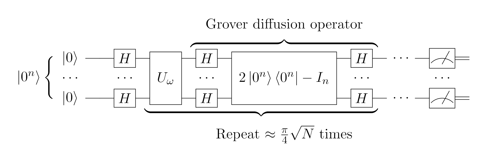

1.0. Preview
This paper introduces yaw, a language for algebraic quantum
programming. Before we dive into the details, it will be helpful to
preview what "algebraic quantum programming" means.For a considerably lengthier version, we refer readers to the prequel paper, The Structure and Interpretation of Quantum Programs I: Foundations (2025).
Usually, quantum programming occurs at the level of a (typically
finite-dimensional) Hilbert space \(\mathcal{H}\), with basic objects the
states \(|\psi\rangle \in \mathcal{H}\). We manipulate these using linear
operators on the Hilbert space \(A \in \mathcal{B}(\mathcal{H})\); these
are built out of primitive, physically simple(r) operations
\(\mathcal{G} \subseteq \mathcal{B}(\mathcal{H})\) called "gates", and the
whole workflow of preparing a state \(|\psi\rangle\), building an
operation \(A\) from simpler gates, and extracting outputs from
\(A|\psi\rangle\), is called a quantum circuit. The canonical example is
to initialize \(|\psi\rangle = |0^n\rangle\) in the Hilbert space of \(n\)
qubits, \(\mathcal{H} = \mathcal{H}_2^{\otimes n}\), generate
\(\mathcal{B}(\mathcal{H})\) from a two-qubit universal gate set like
\(\mathcal{G}=\{H_i, S_i, T_i, \text{CNOT}_{ij}\}\) where \(i\) and \(j\)
indicate which qubits are acted on, and finally measure in the \(Z\)
basis.
This is a fairly reasonable physical picture of what goes on inside a quantum computer, provided we ignore the physical errors induced by interactions with the environment. But (even ignoring errors) certain limitations of the circuit paradigm become apparent. The focus on compilation of operators from gate sets makes the typical presentation of an algorithm dense, obscure, and low-level. Here is Grover search for instance:

Figure 1: Quantum circuit for Grover search, taken from Wikipedia.
This is a relatively tame example, but illustrates the basic problem: what the circuit does is not the same as what the circuit is. We cannot tell the first from the second. We can try to rectify the problem with "macros", that is, abstraction boxes which stand for more complex expressions, and that helps. But defining a macro like the diffusion operator \[ D = 2 |0^n\rangle\langle 0^n| - I \] does not immediately help us understand what the operator is doing in our algorithm. A better hint comes from the oracle \(U_\omega\), which is defined by its behaviour on basis states as \[ U_\omega |\kappa\rangle = (-1)^{\delta_{\omega,\kappa}} |\kappa\rangle \] where \(\omega\) and \(\kappa\) are \(n\)-bit (classical) strings. This is easy to explain: it flips the phase of \(|\omega\rangle\) and leaves anything else alone.
Algebraic quantum programming takes this hint radically. Oracles are
operators with specified behaviour, so we make the whole foundation of
the approach operators with specified behaviour. Instead of a Hilbert
space \(\mathcal{H}\), we focus on the operators
\(\mathcal{B}(\mathcal{H})\), and in fact to avoid relying on Hilbert
space we define abstract operator algebras \(\mathcal{A}\) called
C\({}^*\)-algebras which carry a linear structure, allow multiplication
\(A, B \mapsto A \cdot B\), taking of adjoints \(A \mapsto A^*\), and
finally have a notion of size \(A \mapsto \Vert A \Vert\).
An edifice built of oracles.
These can always be realized on a specific, concrete Hilbert space, and
indeed, this is what allows us to compile our programs on conventional
quantum computers. Although we touch on the issue of compilation below,
we leave a deeper exploration to upcoming work, and focus instead on how
to formulate algorithms when "everything is an oracle".
This proceeds in a few stages. Keeping the operator algebra abstract has the advantage that we can specify it in different ways. For instance, the algebra of a qubit \(\mathcal{A}_2\) can be viewed as the unit matrices \[ E_{11} = \begin{bmatrix} 1 & 0 \\ 0 & 0 \end{bmatrix}, \quad E_{12} = \begin{bmatrix} 0 & 1 \\ 0 & 0 \end{bmatrix}, \quad E_{21} = \begin{bmatrix} 0 & 0 \\ 1 & 0 \end{bmatrix}, \quad E_{22} = \begin{bmatrix} 0 & 0 \\ 0 & 1 \end{bmatrix}. \] These have a very sparse multiplicative structure: \[ E_{ab}E_{cd} = \delta_{bc}E_{ad}. \] An alternative parameterization is given by the celebrated Pauli matrices \(\sigma_1 = X, \sigma_2 = Y, \sigma_3 = Z\), with the explicit matrix expressions \[ \sigma_1 = \begin{bmatrix} 0 & 1 \\ 1 & 0 \end{bmatrix}, \quad \sigma_2 = \begin{bmatrix} 0 & i \\ -i & 0 \end{bmatrix}, \quad \sigma_3 = \begin{bmatrix} 1 & 0 \\ 0 & -1 \end{bmatrix}. \label{eq:pauli-mats} \] These have a much richer multiplicative structure: $$ \sigma_i \sigma_j = \delta_{ij} I + i \epsilon_{ijk} \sigma_k, \label{eq:pauli-rel} $$ where \(\epsilon_{ijk} = \mbox{sgn}(ijk)\) is the Levi-Civita tensor. These are unitary and Hermitian, so they act both as transformations (unitary) and measurements (Hermitian), explaining their ubiquity for quantum computing. Finally, this set of operators is "overcomplete" in the sense that we can generate all three from products of two, for instance \(X\) and \(Z\). So a more convenient parameterization for some purposes is simply \(X\) and \(Z\), which anticommute: \[ XZ = -ZX. \] We could go on, but the point is that these all span the same set of operators \(\mathcal{B}(\mathcal{H}_2)\), but the useful computational properties live in the multiplicative rather than the additive structure.
To foreground and flexibly parameterize this multiplicative structure, it helps to define the operator algebra independent of the Hilbert space on which it acts. We do this using the method of presentations, where a C\({}^*\)-algebra \(\mathcal{A} = \langle\mathcal{G}|\mathcal{R}\rangle\) is defined in terms of the operators \(\mathcal{G}\) that multiplicatively generate the full algebra, and the relations \(\mathcal{R}\) they satisfy. This replaces the explicit matrix description. For instance, the \(XZ\) parameterization corresponds to the presentation \[ \mathcal{A}_2 = \langle X, Z \,|\, XX^* = X^2 = ZZ^* = Z^2 = I, \, XZ = -ZX\rangle, \] i.e. \(X\) and \(Z\) are Hermitian unitaries that anticommute. This makes the "oracular" nature of programs clear.
Of course, we cannot dispense with states; they are the bridge from abstract operators to physically realized measurements. But instead of thinking of them as vectors in a Hilbert space, we view them as probability distributions over measurement outcomes \(S(\mathcal{A})\), or rather, expectation functionals \(\mathbb{E}_\pi: \mathcal{A}\to\mathbb{C}\) over operators. Like the expectation functions familiar from probability theory, they are linear in their inputs and normalized: \[ \mathbb{E}_\pi[\alpha A + \beta B] = \alpha\mathbb{E}_\pi[A] + \beta\mathbb{E}_\pi[B], \quad \mathbb{E}_\pi[I] = 1. \] Choosing an initial state like \(|0^n\rangle\) corresponds here to choosing an "eigenfunctional" of some operator, meaning the operator has zero variance. For instance, an eigenfunctional \(\mathbb{E}_\pi\) of \(Z\) satisfies \[ \mathbb{E}_\pi[|Z|^2] = \mathbb{E}_\pi[Z^2] = \left|\mathbb{E}_\pi[Z]\right|^2. \] This makes sense if we view states as measurement averages; an eigenfunctional corresponds to an eigenstate, where we always observe the same thing so the variance in outcome is zero.
To actually enumerate different states, Hilbert space becomes indispensable. The Gelfand-Naimark-Segal (GNS) construction allows us to build a Hilbert space \(\mathcal{H}_\pi\) directly from an operator algebra \(\mathcal{A}\) and a state \(\mathbb{E}_\pi\); this gives a list of "pure states" from which we can build expectation functionals by mixing. Listing pure states is analogousIn fact, it is more than an analogy: these are both instances of a generalized Stone duality over different fields. to the way we can list truth-value assignments in classical Boolean algebra; our list is exponentially large, but exhaustive and therefore helpful when we need to look for (counter)examples. On the flip side, we use Boolean algebra to manipulate digital circuits, and the C\({}^*\)-algebraic approach is the analogue for quantum circuits. This explains (at least at a high-concept level) why restricting quantum computing to Hilbert space creates problems. It's like doing classical computing entirely with truth tables!
Once we have an algebra \(\mathcal{A} = \langle \mathcal{G}|\mathcal{R}\rangle\) and the dual perspective afforded by states \(\pi \in S(\mathcal{A})\) (including the GNS Hilbert space \(\mathcal{H}_\pi\)), we almost have enough ingredients to start baking algorithms. The only thing missing is the ability to combine things. There are three basic methods of composition:
- spatial composition, aka the tensor product;
- temporal composition, aka conjugation; and
- functional composition, aka quantum channels.
The tensor product takes objects in different algebras (operators, states, etc) and configures them simultaneously. For instance, acting with operator \(A \in \mathcal{A}\) and \(B \in \mathcal{A}'\) at the same time corresponds to the operator \(A \otimes B \in \mathcal{A} \otimes \mathcal{A}'\). Entanglement is simply the failure of an object to tensor-factorize.
If the tensor product captures spatial composition, conjugation captures composition in time. More precisely, the Heisenberg evolution of an observable \(A\) is given by \[ A \mapsto U^* A U = U \triangleright A, \] where \(U\) is the time evolution operator, and \(\triangleright\) is the (operator) conjugator.We use \(\triangleright\) instead of the conventional \(\text{Ad}_U\) action since we find the infix notation cleaner. We define the state conjugator \(\triangleleft\) as the "pullback" of operator conjugation: \[ ( U \triangleleft \pi) [A] = \pi( U \triangleright A) = \pi (U^*AU). \] This is the appropriate Schrödinger evolution when the state is related to vectors in a Hilbert space by \(\pi(A) = \langle \pi |A |\pi\rangle\). Strictly speaking, we could view multiplication \(A, B \mapsto A \cdot B\) as composition in time ("do \(B\), then \(A\)"), but time evolution via conjugation is a richer temporal notion than simple multiplication.
Finally, we can compose via channels. Channels model noisy processes and measurements. A channel is a generalized form of conjugation, where instead of conjugating with one operator, we conjugate with several. Schematically, for a family of operators \(K_\lambda\) labelled by \(\lambda \in \mathfrak{L}\) that sum to the identity, \(\sum_{\lambda\in \mathfrak{L}} K_\lambda K_\lambda^* = I\), the associated operator and state channels are the sum of operator and state conjugators: \[ \mathcal{C}_{\mathfrak{L}} = \sum_{\lambda\in \mathfrak{L}} K_\lambda\, \triangleright, \quad \mathcal{C}^{\mathfrak{L}} = \sum_{\lambda\in \mathfrak{L}} K_\lambda \,\triangleleft. \] If the channel is observed in state \(\pi\), then outcome \(\lambda\) is measured with probabilityThe requirement that \(K_\lambda K_\lambda^*\) sums to unity then corresponds to conservation of probability. \(p_\lambda\) given by the Born rule as \[ p_\lambda = \pi[K_\lambda K_\lambda^*], \] and the channel (conditioned on this outcome) according to the Lüders rule by \[ \mathcal{C}_{\mathfrak{L}} \mapsto p_\lambda^{-1} K_\lambda\, \triangleright, \quad \mathcal{C}^{\mathfrak{L}} \mapsto p_\lambda^{-1} K_\lambda \,\triangleleft. \] The canonical example is projector-valued measurement (PVM), where the \(K_\lambda\) are orthogonal projectors that resolve the identity: \[ \sum_{\lambda} \Pi_\lambda = I, \quad \Pi_\lambda \Pi_\mu = \delta_{\mu\lambda}\Pi_\lambda. \] In state \(\pi\), we observe outcome \(\lambda\) with probability \(p_\lambda = \pi(\Pi_\lambda)\), and the post-measurement state is \(p_\lambda^{-1}\Pi_\lambda \triangleleft \pi\).This rule may be familiar from a first course on quantum computing. See for instance the drily canonical reference Quantum Computation and Quantum Information (2000), Nielsen and Chuang.
From these primitives, we can build everything else. As a simple example of how this works, we can start by defining the generalized Clifford or simply /qudit algebra/Known by many other names, including the generalized Pauli, Weyl-Heisenberg, or Sylvester matrices.
\begin{equation} \mathcal{A}_d = \langle X, Z \,|\, XX^* = X^d = ZZ^* = Z^d = I, \, ZX = \omega_d XZ\rangle, \label{eq:pres-qudit} \end{equation}where \(X\) and \(Z\) are unipotent unitaries whose $d$th power is the identity, and braid, i.e. commute up to a $d$th root of unity \(\omega_d = e^{2\pi i /d}\). We can factorize the unipotence relation of \(Z\) to obtain its eigenvalues, \[ Z^d - I = \prod_{k=0}^{d-1} (Z - \omega_d^k I), \] and build the projector onto \(\omega_d^k\) explicitly as \[ \Pi_{k}^{(Z)} = \frac{\prod_{j\neq k}(Z - \omega_d^j I)}{\prod_{j\neq k}(\omega_d^k - \omega_d^j)}. \] Using projectors and working on the tensor product \(\mathcal{A}_d^{\otimes 2}\), we can define a controlled-\(X\) operation: \[ \text{CX} = \sum_{k=0}^{d-1} \Pi_{k}^{(Z)} \otimes X^k, \] which applies \(X^k\) in the second slot when it encounters \(\pi^{(Z)}_k\), the \(\omega_d^k\)-eigenfunctional of \(Z\), in the first. You can show that \(X \triangleleft \pi^{(Z)}_k = \pi^{(Z)}_{k+1}\),This is easy to derive from the braiding relation: \[ZX |\omega_d^k\rangle = \omega_d X Z |\omega_d^k\rangle = \omega_d^{k+1} X |\omega_d^k\rangle.\] and it follows that \[ \text{C}X (X^k \otimes I) \triangleleft (\pi^{(Z)}_0 \otimes \pi^{(Z)}_0) = (X^k \otimes X^k) \triangleleft (\pi^{(Z)}_0 \otimes \pi^{(Z)}_0). \] Extending to a sum of terms \(W = \frac{1}{\sqrt{d}}\sum_{k=0}^{d-1} X^k\), we haveThis is a special form of the quantum Fourier transform (QFT) that we cover at greater depth below. More generally it takes the form \(W = \frac{1}{\sqrt{d}}\sum_{k=0}^{d-1} X^kZ^{-(k+1)}.\) \[ \text{C}X \left(W\otimes I\right) \triangleleft (\pi^{(Z)}_0 \otimes \pi^{(Z)}_0) = \frac{1}{\sqrt{d}}\sum_{k=0}^{d-1}\left(X^k \otimes X^k\right) \triangleleft (\pi^{(Z)}_0 \otimes \pi^{(Z)}_0), \] or in the GNS Hilbert space associated with \(\pi^{(Z)}_0\), \[ \text{C}X (W\otimes I)|0\rangle\otimes |0\rangle = \frac{1}{\sqrt{d}}\sum_{k=0}^{d-1} |k\rangle\otimes |k\rangle. \] This state has the miraculous property that the outcome of a \(Z\) measurement on the first systemThis is the PVM with components \(\Pi_k^{(Z)} \otimes I\) for \(k \in \{0, 1, \ldots, d-1\}\); similarly, a \(Z\) measurement on the second system has projectors \(I\otimes\Pi_k^{(Z)}\). automatically matches the outcome of a \(Z\) measurement on the second; this is "spooky action at a distance". We have just performed our first nontrivial quantum algorithm, and produced an entangled state.
This little construction already contains the whole ethos of the paper. We specified an algebra by generators and relations, treated states as expectation functionals, and then composed until something recognizably algorithmic fell out. In what follows, we apply the same philosophy to five canonical protocols—teleportation, Grover search, Fourier sampling, simulation, and error correction—which not only demonstrate different aspects of algebraic quantum programming, but in turn, are illuminated by the algebraic perspective. We may draw fewer circuits, and fall out of touch with compilation-level details, but we trade "how" for "why", with intuition and unifying themes emerging elegantly from the algebra. It's a good trade.